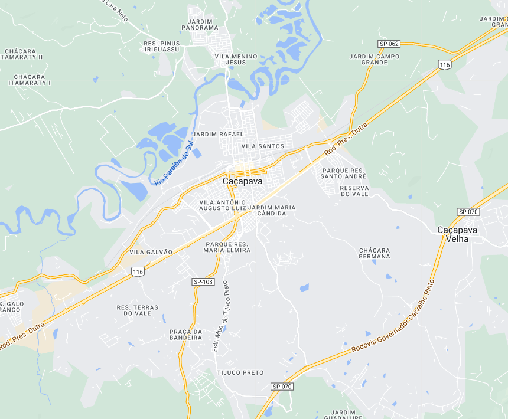

Caçapava - Geodex

Município de Caçapava
-
Populacão: 95.752 pessoas
-
Área: 368,990km²
-
Fundação: 12 de Outubro de 1855
-
Distância da Capital: 113km
Caçapava, um município localizado no Vale do Paraíba, foi fundado em 1855 a partir de dois núcleos distintos. Ao longo de sua história, Caçapava desempenhou um papel importante como passagem das bandeiras que se dirigiam às Minas Gerais e das tropas que retornavam. Atualmente, a cidade se beneficia da sua localização estratégica e do parque industrial, além de possuir uma rica fauna e flora, trilhas históricas e um potencial turístico voltado para o ecoturismo, patrimônio histórico-cultural e turismo rural. Caçapava também se destaca por abrigar museus importantes e realizar grandes eventos, como a Festa de São João e Corpus Christi.